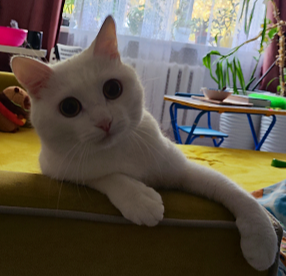

Одно божество на миллиард прекрасных котиков
Обо мне Мяу
Позвольте мне рассказать вам о себе. Я — король этого хозяйского дома, воплощение грации и изящества. Моя шерсть блестит на солнце, отражая золотистые лучи, словно сотканные из света. Каждый мой шаг — это танец, каждое движение — проявление гармонии и ума.Я обладаю древней мудростью, которую знают лишь немногие. В моих глазах скрывается тайна вселенной, а мой взгляд может проникнуть вглубь вашей души. Когда я лежу на подоконнике и наблюдаю за миром за стеклом, я ощущаю связь со всей природой, чувствуя дыхание ветра и шепот деревьев. Моё присутствие приносит умиротворение и баланс. Я — страж покоя, хранитель тишины в этом шумном мире. Мои мягкие мурлыканья способны исцелить самые тревожные сердца, а мое спокойствие вдохновляет на размышления и самопознание. В каждом моём движении — грация божественности. Я — символ красоты и утончённости, воплощённый в пушистом теле. Моя элегантность не знает границ, и каждый, кто встречает меня, не может не восхищаться моим присутствием.

Так что, дорогие друзья, помните, что за каждым спокойным взглядом и мягким мурлыканьем скрывается удивительная сущность, полная красоты и божественности. .
Мяу! Я — не просто котик, я — воплощение чудесного и прекрасного в этом мире. Мяу!
